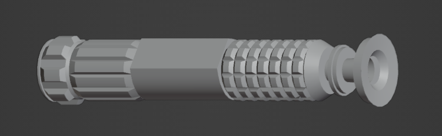

VR+mocap prototype
Combining VR and full-body motion capture for highly physical virtual experiences.


tl;dr
This is a prototype VR multiplayer sword dueling game using Unity, an OptiTrack stage, and several CC0 art assets. Two players face off with physical foam swords on a motion capture stage. The capture data is streamed to the VR headsets to drive visuals that align with the real world. Still a prototype, most of the visuals are placeholders.
tracking & calibration
I am using an OptiTrack mocap system, and OptiTrack's official plugin for Unity does not support 1:1 skeletal tracking nor Android / Meta Quest. I instead modified an old third-party plugin compatible with Android to support 1:1 skeletal tracking and the latest version of OptiTrack's software.

While OptiTrack supports VR headset tracking, the Meta Quest already tracks itself and with less latency. I wrote a calibration solution to align a headset's spatial orientation to the mocap system's. Once calibrated, the headset is responsible for its own tracking as usual.
There is still a lot of work to be done to improve space calibration, motion tracking latency, and the foam swords themselves (made of PVC pipe and pool noodles, they're too heavy).
visuals
Over-exposed light trails are a lightsaber signature. While still a prototype, it just wouldn't be the same without them. I achieve these with a simple custom mesh trail with a fixed topology moving existing vertices rather than regenerating the whole mesh.

I remixed several CC0 assets from PolyHaven.com and AmbientCG.com to create a placeholder lava planet environment. The robot model is a Unity standard asset.
thanks
I'd like to thank my friends Hazel & Matthew for testing and also coming on a late-night run to buy pool noodles for the swords. Thank you!